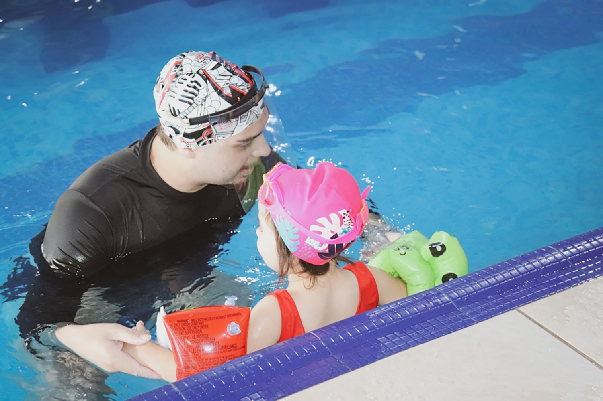
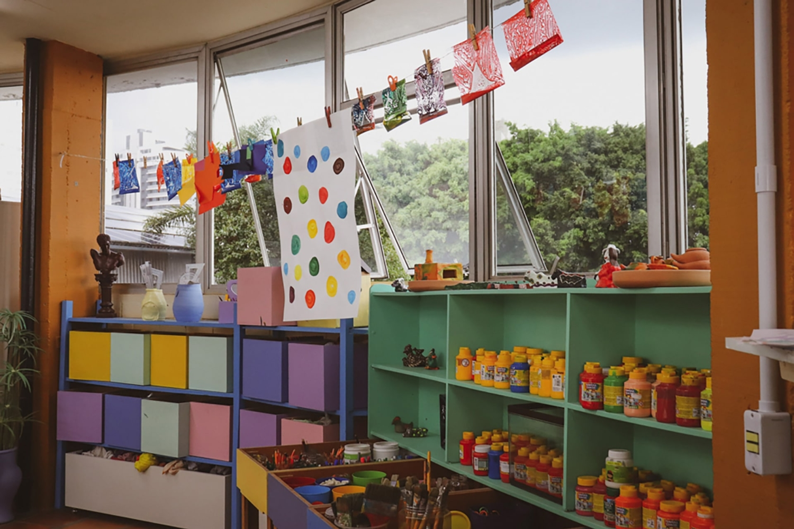
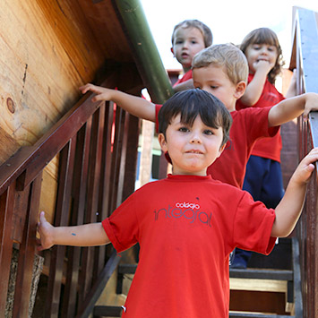
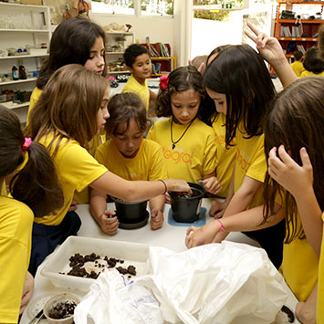
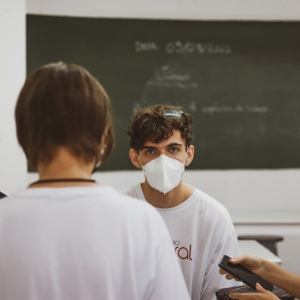
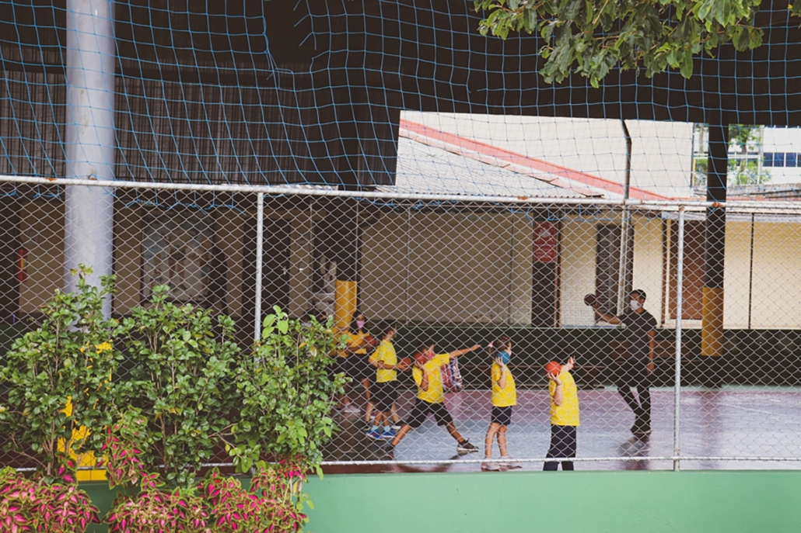
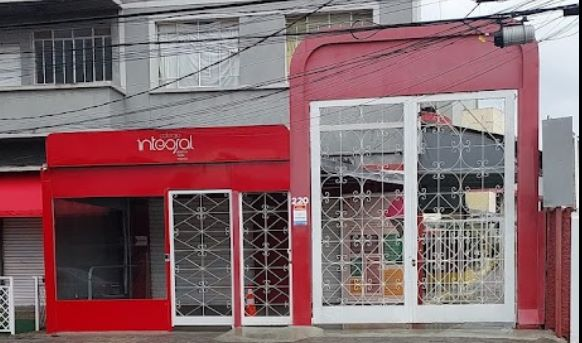

Quadra da escola
Essa é a quadra grande para jogos esportivos

Piscina da escola
Natação para o peródo integral
Laboratório da escola
Aqui temos aula de laboratório

sala de artes da escola
aqui temos aula de artes
Ensino infantil

A Educação Infantil no Colégio Integral atende alunos de 3 a 5 anos. É a primeira etapa da Educação Básica quando a criança aprende dividir a atenção com outras pessoas, observa e experimenta a expressão de seus sentimentos, a vivência de frustrações, a resolução de conflitos e a regulação de suas emoções; tudo isso através das interações e brincadeiras que vive com seus colegas e professores, ao mesmo tempo em que exercita suas capacidades motoras e cognitivas e amplia sua visão de mundo.
Ensino fundamental

Ao ingressar nos Anos Iniciais do Ensino Fundamental os estudantes vivenciam a transição de uma orientação curricular estruturada por campos de experiências da Educação Infantil, para uma organização curricular estruturada por áreas de conhecimento e componentes curriculares. Conheça os componentes e as habilidades que seu filho desenvolverá em cada uma dessas áreas.
Nos Anos Finais do Ensino Fundamental, os alunos irão apropriar-se de maior autonomia para produção dos conhecimentos escolares e problemas reais, ressignificando e ampliando seus saberes já adquiridos, relacionando-os às diferentes áreas do conhecimento. Conheça as habilidades que seu filho desenvolverá em cada uma dessas áreas.
Ensino médio

O conjunto de competências e habilidades desse nível consolida e amplia as competências gerais da Educação Básica. Pretende-se por meio de uma noção ampliada e plural de juventude, garantir ao jovem sua inserção autônoma e crítica no mundo, incentivando-o na continuidade de sua jornada acadêmica e preparando-o para os desafios da vida adulta e para o trabalho. Conheça as propostas para cada uma dessas áreas
O que há de novo?
-
Pintaram a quadra grande

A quadra não era reformada a 2 anos por isso haviam buracos e a pintura estava desaparecerendo o que dificultava o uso dela, e após a reforma ela está sendo mais utilizada.
-
Adicionaram dois novos portões

O portão da minha escola era antigo e entrada do colégio os portões não eram reforçados, mas agora para a segurança dos alunos eles colocaram travas elêtronicas nos portões.
Nome do diretor:
Marisa
whats:(41) 3027_2744